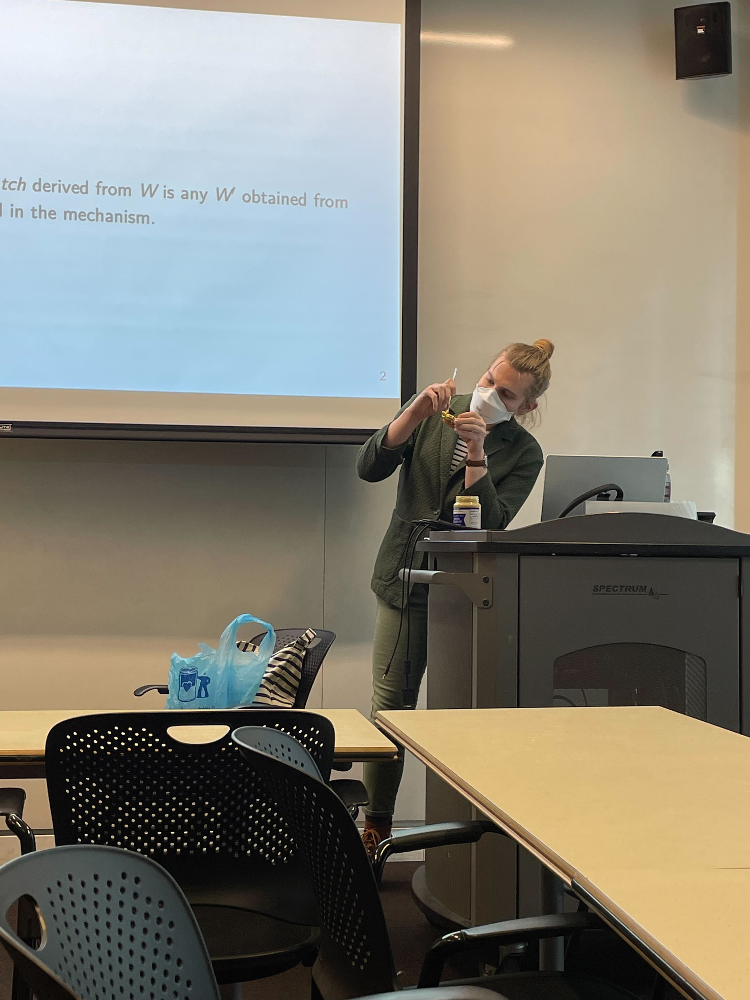

i gave a short talk on y j ringard’s famous 1990 paper “mustard watches: an integrated approach to time and food” at cmu plunch on march 4, 2022. i covered both the material in the original paper and some of the developments that have happened since. the slides follow: